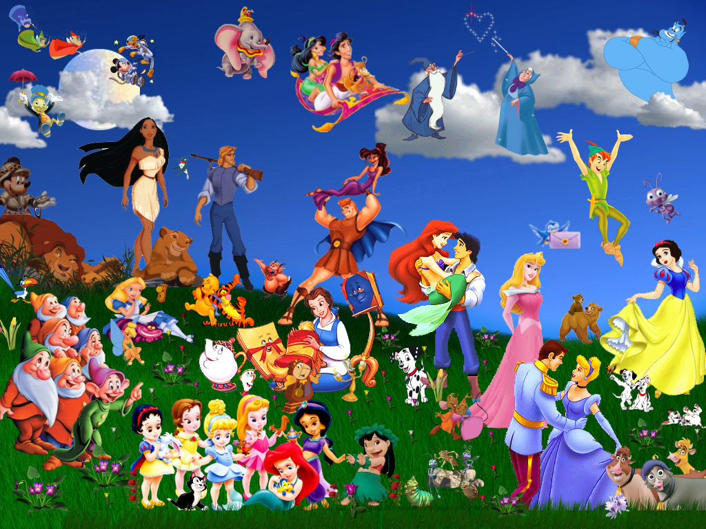
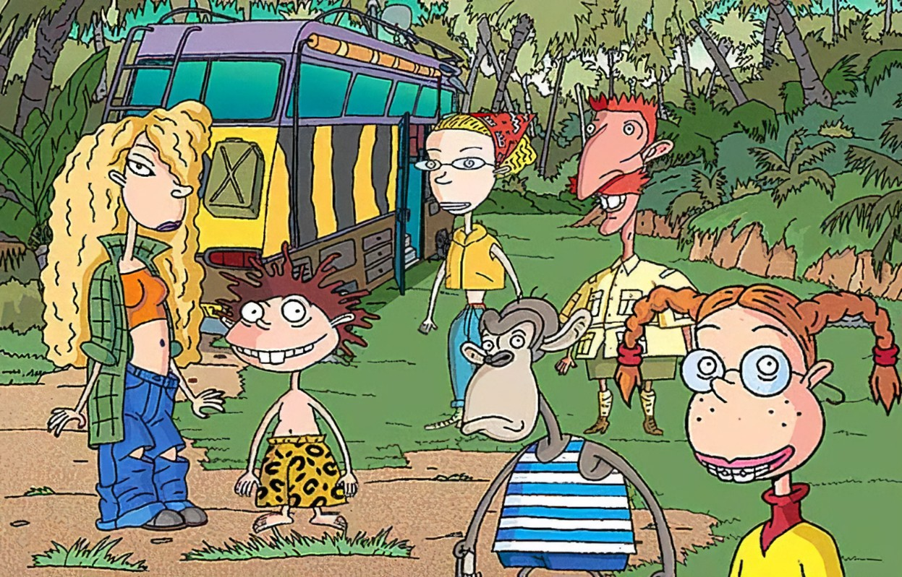

Relive Cartoon Network Classics

Explore the world of Cartoon Network, home to unforgettable characters like Dexter, Blossom, and Jake the Dog.
Disney Channel Memories
Revisit magical Disney Channel shows like Hannah Montana and The Suite Life of Zack & Cody that shaped your childhood.
Nickelodeon Favorites
Laugh and reminisce with Nickelodeon’s most beloved shows, from SpongeBob SquarePants to Rugrats.